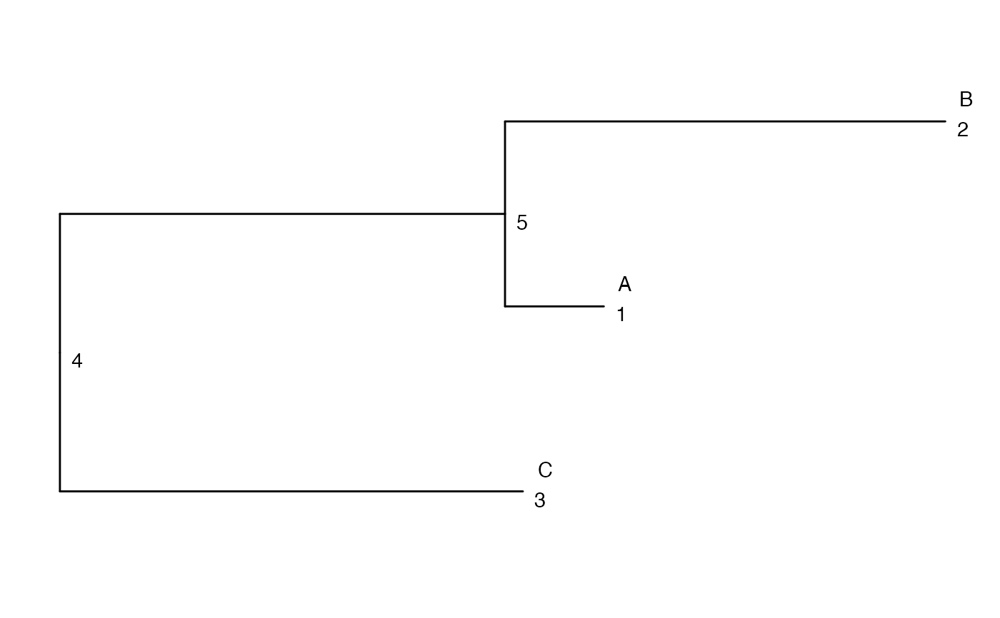

Aggregate observed values based on a column (sample) tree, e.g. for differential state analysis. The returned object will contain one abundance matrix for each node in the tree, with columns corresponding to sample IDs and rows corresponding to the same features as the rows of the input object. The nodes correspond to either the original sample clusters, or larger metaclusters encompassing several of the original clusters (defined by the provided column tree).
aggDS(
TSE,
assay = "counts",
sample_id = "sample_id",
group_id = "group_id",
cluster_id = "cluster_id",
FUN = sum,
message = FALSE
)A TreeSummarizedExperiment object. Rows represent
variables (e.g., genes) and columns represent observations (e.g., cells).
The object must contain a column tree, whose tips represent initial
cell clusters (the cluster_id annotation indicates which of
these clusters a cell belongs to). The internal nodes represent
increasingly coarse partitions of the cells obtained by successively
merging the original clusters according to the provided column tree.
The name or index of the assay from TSE to aggregate
values from.
A character scalar indicating the column of
colData(TSE) that corresponds to the sample ID. These will be the
columns of the output object.
A character scalar indicating the column of
colData(TSE) that corresponds to the group/condition. This
information will be propagated to the aggregated object.
A character scalar indicating the column of
colData(TSE) that corresponds to the initial cluster ID for
each cell.
The aggregation function.
A logical scalar, indicating whether progress messages should be printed to the console.
A SummarizedExperiment object. Each assay represents the
aggregated values for one node in the tree.
suppressPackageStartupMessages({
library(TreeSummarizedExperiment)
library(ape)
library(ggtree)
})
set.seed(1L)
tr <- rtree(3, tip.label = LETTERS[seq_len(3)])
ggtree(tr) +
geom_text(aes(label = node), hjust = -1, vjust = 1) +
geom_text(aes(label = label), hjust = -1, vjust = -1)
#> Warning: Removed 2 rows containing missing values or values outside the scale range
#> (`geom_text()`).

cc <- matrix(rpois(60, 10), nrow = 6)
rownames(cc) <- paste0("gene", seq_len(6))
colnames(cc) <- paste0("cell", seq_len(10))
cd <- data.frame(sid = rep(seq_len(2), each = 5),
gid = rep(letters[seq_len(2)], each = 5),
cid = sample(LETTERS[seq_len(3)], size = 10,
replace = TRUE),
stringsAsFactors = FALSE)
tse <- TreeSummarizedExperiment(assays = list(counts = cc),
colTree = tr,
colNodeLab = cd$cid,
colData = cd)
#> Warning: Multiple nodes are found to have the same label.
out <- aggDS(TSE = tse, assay = "counts", sample_id = "sid",
group_id = "gid", cluster_id = "cid")
#> Warning: Multiple nodes are found to have the same label.
## Aggregated counts for the node 5
SummarizedExperiment::assay(out, "alias_5")
#> 1 2
#> gene1 23 54
#> gene2 25 44
#> gene3 24 61
#> gene4 23 51
#> gene5 19 45
#> gene6 17 41
## This is equal to the sum of the counts from nodes 1 and 2
SummarizedExperiment::assay(out, "alias_1")
#> 1 2
#> gene1 11 20
#> gene2 14 14
#> gene3 12 27
#> gene4 11 20
#> gene5 9 20
#> gene6 14 18
SummarizedExperiment::assay(out, "alias_2")
#> 1 2
#> gene1 12 34
#> gene2 11 30
#> gene3 12 34
#> gene4 12 31
#> gene5 10 25
#> gene6 3 23